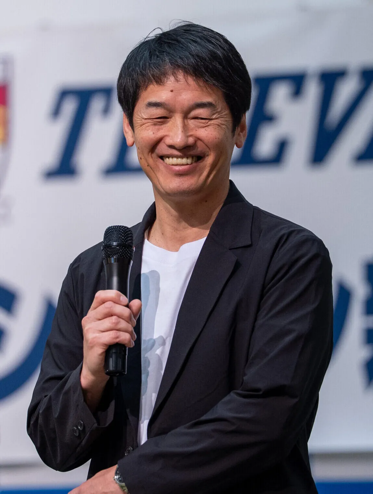

大学卒業後、選手、指導者、フロントスタッフとして長年サッカー界に関わる。現役時代のキャンプ地として30年以上にわたり宮崎県と縁があり、地域の特性を深く理解している。2024年、いちご株式会社が経営に参画したタイミングで合流。「選手を育て、チームを強くし、地域に貢献する」という持続可能なクラブ運営を掲げ、就任2年目でJ3からJ2への昇格（想定より1年早い達成）を果たすなど、手腕を発揮している。
https://www.tegevajaro.com/私たちが最も大切にしているのは、「選手の成長」です。若い選手やこれから伸び代のある選手たちが、この環境で日々トレーニングを積み、個として成長すること。その積み重ねが結果としてチームを強くしていくという「育成型」のアプローチを徹底しています。単に勝利を追い求めるだけでなく、選手がここでどれだけ成長できたかを重視する姿勢がクラブの根底にあります。
非常にアグレッシブなスタイルを目指しています。守備においても、ただ「守る」のではなく「奪いに行く」という姿勢を重視しています。相手からボールを奪い取り、自分たちが主導権を握って攻撃を仕掛ける。高い位置からハードワークして相手を追い詰めるスタイルは、選手にとってもタフさが求められますが、それこそが成長に繋がると信じています。練習は非常にハードですが、その分、試合で「練習の方がきつかった」と思えるほどの準備を積み上げています。
実は、私たちのクラブハウスはショッピングセンター（宮交シティ）の中にあります。ロッカーやメディカルルームが完備されているのはもちろんですが、同じ施設内にあるトレーニングジムはボディビルの日本王者なども所属しているほどの充実した設備のあるジムで体を鍛えることができます。食事環境も、宮崎の美味しいお肉や野菜を活かした質の高いものを提供しており、これほど低コストで「選手を育てるためのリソース」を集中させている環境は、日本中探してもなかなかない自負があります。

J3からJ2への昇格は、当初の想定よりも1年半ハイペースでした。私が就任する前の時期は勝てない時期が続いたり、ライセンスの関係で昇格が叶わなかったりと苦しい時期もありました。しかし、そこから自分たちが目指すべき方向を明確にし、スタジアムの整備といった大きなハードルを一つひとつクリアしてきた結果、今があります。この数年間の積み上げが、今の勢いを生んでいると思っています。
2024年からいちご株式会社が経営に参画したことは、非常に大きな意味を持っています。単なるスポンサーとしてではなく、地域に根ざした「スポーツビジネスの基盤」を共に作っていくオーナーとして同じ価値観を持って歩んでいます。「個を育て、チームを強くする」という育成型クラブ運営の考え方が一致したからこそ、今の安定した運営と挑戦的な姿勢が両立できているのです。
私が就任した直後は、実はなかなか勝てず、順位も低迷していました。守備的なスタイルから攻撃的なスタイルへの転換期という「産みの苦しみ」の時期でした。しかし、プロセスを信じて我慢強く戦い続けた結果、就任から5節ごろを経てようやく初勝利を挙げることができました。これまで多くのタイトル獲得や昇格を経験してきましたが、あの時の初勝利の嬉しさは、私の中でベストだと言えるほど感慨深いものでした。
宮崎は地域のネットワークが大事です。いわゆる「一見さん」としてビジネスを始める時には人との繋がりや紹介が大事です。しかし一度懐に入ればお互いに助け合う「もちつもたれつ」の精神があり、これがビジネスの土台になっています。私たちは「宮崎代表」として、地域の方々に自慢してもらえるような存在になりたいと考えています。
例えば、宮崎は昔からプロ野球やリーグのキャンプ地として有名ですが、それは受け入れ側のホテルや飲食店の方々の対応力が非常に高いからです。食事の質やトレーニング環境、そしてホスピタリティ。これらは宮崎が誇るべきリソースです。私たちは、この素晴らしい環境を活かしながら、さらに「宮崎ならでは」のスポーツビジネスモデルを確立したいと考えています。
都心のようにすでに市場がある場所とは違い、宮崎ではまだプロスポーツを使ったビジネスの成功体験が少ないかもしれません。だからこそ、「待っていても何も起こらない」という前提に立ち、自分たちで市場を創り出していく必要があります。スポーツを通じて地域の課題を解決し、新しい価値を創造していく。この「市場創造」のプロセスそのものが、宮崎でのやりがいだと感じています。
私たちはまだJ2に残留するだけでなく、その先のJ1昇格を現実的に見据えています。そのためには、クラブとしての経営基盤をさらに強化し、マネタイズの仕組みを整える必要があります。選手たちが安心して競争し成長し続けられる環境を維持しながらクラブ全体の体力を底上げしていく。J2、J1とカテゴリーが上がれば、地域への経済効果もさらに大きくなります。その期待に応える準備を、今この瞬間から進めています。

宮崎の誇りを胸に、共に新たな市場と未来を創ろう。「宮崎だからできない」ことは絶対にありません。既存の市場に乗るのではなく、自ら市場を創り出す気概を持ってください。私たちのクラブも強い信念で挑戦し続けたことで、今の景色があります。厳しい練習や苦しい戦いはすべて「成長」のためです。不安を乗り越えた先に、今まで見たことのない景色が広がっています。私たちは宮崎のプライドを背負い、全力で戦い続けます。皆さんの日常に私たちの記憶が自然と出るような、地域に愛されるクラブを共に創っていきましょう。